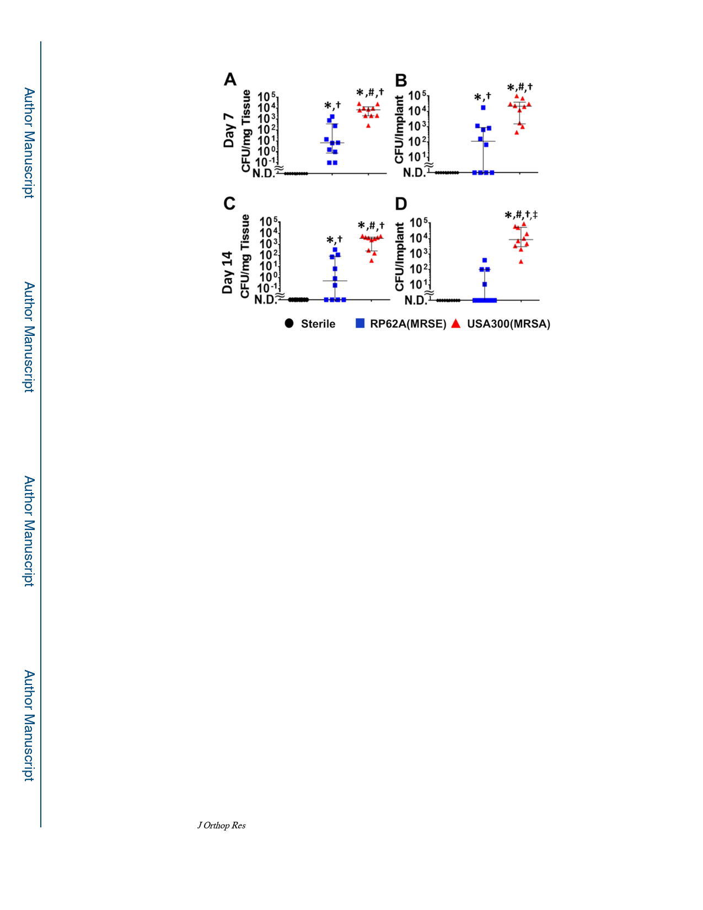

Tomizawa et al.
Page 14
Figure 2. Decreased incidence and bacterial burden of RP62A implant-associated osteomyelitis
compared to USA300.
Mice were challenged with a transtibial implant containing no bacteria (Sterile), 1.6×105
CFU of RP62A, or 2.1×105 CFU of USA300, and euthanized on day 7 (A, B), or day 14 (C,
D) post-op. The challenged tissues (A, C) and implants (B, D) were harvested and processed
for CFU content, and the data are presented for each mouse in the group (n=10) with median
and interquartile range (N.D.=not detectable; *p<0.05 vs. Sterile, #p<0.05 vs. RP62A).
Statistical assessment of the incidence of CFU are shown (†p<0.05 vs. Sterile, ‡p<0.05 vs.
RP62A).
J Orthop Res. Author manuscript; available in PMC 2021 April 01.